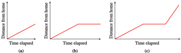
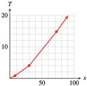

Section 2.4 Functions as Mathematical Models
¶Subsection 2.4.1 The Shape of the Graph
Creating a good model for a situation often begins with deciding what kind of function to use. An appropriate model can depend on very qualitative considerations, such as the general shape of the graph. What sort of function has the right shape to describe the process we want to model? Should it be increasing or decreasing, or some combination of both? Is the slope constant or is it changing?
In Examples 2.4.1 and 2.4.3, we investigate how the shape of a graph illustrates the nature of the process it models.
Example 2.4.1.
Forrest leaves his house to go to school. For each of the following situations, sketch a possible graph of Forrest's distance from home as a function of time.
Forrest walks at a constant speed until he reaches the bus stop.
Forrest walks at a constant speed until he reaches the bus stop; then he waits there until the bus arrives.
Forrest walks at a constant speed until he reaches the bus stop, waits there until the bus arrives, and then the bus drives him to school at a constant speed.
-
The graph is a straight-line segment, as shown in figure (a). It begins at the origin because at the instant Forrest leaves the house, his distance from home is 0. (In other words, when \(t = 0, y = 0\text{.}\)) The graph is a straight line because Forrest has a constant speed. The slope of the line is equal to Forrest’s walking speed.
 The graph begins like the graph in part (a). But while Forrest waits for the bus, his distance from home remains constant, so the graph at that time is a horizontal line, as shown in figure (b). The line has slope \(0\) because while Forrest is waiting for the bus, his speed is \(0\text{.}\)
The graph begins like the graph in part (b). The last section of the graph represents the bus ride. It has a constant slope because the bus is moving at a constant speed. Because the bus (probably) moves faster than Forrest walks, the slope of this segment is greater than the slope for the walking section. The graph is shown in figure (c).
Checkpoint 2.4.2.
Erin walks from her home to a convenience store, where she buys some cat food, and then walks back home. Sketch a possible graph of her distance from home as a function of time.

The graphs in Example 2.4.1 are piecewise linear, because Forrest traveled at a constant rate in each segment. In addition to choosing a graph that is increasing, decreasing, or constant to model a process, we can consider graphs that bend upward or downward. The bend is called the concavity of the graph.
Example 2.4.3.
The two functions described in this example are both increasing functions, but they increase in different ways. Match each function to its graph and to the appropriate table of values.
The number of flu cases reported at an urban medical center during an epidemic is an increasing function of time, and it is growing at a faster and faster rate.
The temperature of a potato placed in a hot oven increases rapidly at first, then more slowly as it approaches the temperature of the oven.
\((1)\)
| \(x\) | \(0\) | \(2\) | \(5\) | \(10\) | \(15\) |
| \(y\) | \(70\) | \(89\) | \(123\) | \(217\) | \(383\) |
\((2)\)
| \(x\) | \(0\) | \(2\) | \(5\) | \(10\) | \(15\) |
| \(y\) | \(70\) | \(219\) | \(341\) | \(419\) | \(441\) |
-
The number of flu cases is described by graph(A) and table (1). The function values in table (1) increase at an increasing rate. We can see this by computing the rate of change over successive time intervals.
\begin{gather*} x = 0 \text{ to } x = 5: ~~~~~~~~m = \frac{\Delta y}{\Delta x}=\frac{123-70}{5-0} = 10.6\\ \\ x = 5\text{ to } x = 10:~~~~~~~~ m = \frac{\Delta y}{\Delta x}=\frac{217-123}{10-5} = 18.8\\ \\ x = 10 \text{ to } x = 15:~~~~~~~~m = \frac{\Delta y}{\Delta x} =\frac{383 - 217}{15 - 10} = 33.2 \end{gather*}The increasing rates can be seen inthe figure below; the graph bends upward as the slopes increase.

-
The temperature of the potato is described by graph(B) and table (2). The function values in table (2) increase, but at a decreasing rate.
\begin{gather*} x = 0\text { to } x = 5:~~~~~~~~m =\frac{\Delta y}{\Delta x}=\frac{341-70}{5 - 0}= 54.2\\ \\ x = 5 \text{ to } x = 10:~~~~~~~~m =\frac{\Delta y}{\Delta x}=\frac{419 - 341}{10 - 5}= 15.6\\ \\ x = 10 \text{ to } x = 15:~~~~~~~~m =\frac{\Delta y}{\Delta x}=\frac{441 - 419}{15 - 10}= 4.4 \end{gather*}The decreasing slopes can be seen in the figure below. The graph is increasing but bends downward.

Checkpoint 2.4.4.
Francine bought a cup of cocoa at the cafeteria. The cocoa cooled off rapidly at first, and then gradually approached room temperature. Which graph more accurately reflects the temperature of the cocoa as a function of time? Explain why. Is the graph you chose concave up or concave down?
(a): The graph has a steep negative slope at first, corresponding to an initial rapid drop in the temperature of the cocoa. The graph becomes closer to a horizontal line, corresponding to the cocoa approaching room temperature. The graph is concave up.
Subsection 2.4.2 Using the Basic Functions as Models
In this section, we consider some situations that can be modeled by the basic functions. Example 2.4.5 illustrates an application of the function \(f (x) =\sqrt{x}\text{.}\)
Example 2.4.5.
The speed of sound is a function of the temperature of the air in kelvins. (The temperature, \(T\text{,}\) in kelvins is given by \(T = C + 273\text{,}\) where \(C\) is the temperature in degrees Celsius.) The table shows the speed of sound, \(s\text{,}\) in meters per second, at various temperatures, \(T\text{.}\)
| \(T ~ (\degree K)\) | \(0\) | \(20\) | \(50\) | \(100\) | \(200\) | \(400\) |
| \(T ~ (\text{m/sec})\) | \(0\) | \(89.7\) | \(141.8\) | \(200.6\) | \(283.7\) | \(401.2\) |
- Plot the data to obtain a graph. Which of the basic functions does your graph most resemble?
- Find a value of \(k\) so that \(s = kf(T)\) fits the data.
- On a summer night when the temperature is \(20\degree\) Celsius, you see a flash of lightning, and \(6\) seconds later you hear the thunderclap. Use your function to estimate your distance from the thunderstorm.
-
The graph of the data is shown below. The shape of the graph reminds us of the square root function, \(y = \sqrt{x}\text{.}\)

- We are looking for a value of \(k\) so that the function \(f(T) = k \sqrt{T}\) fits the data. We substitute one of the data points into the formula and solve for \(k\text{.}\) If we choose the point \((100, 200.6)\text{,}\) we obtain\begin{equation*} 200.6 = k \sqrt{100 } \end{equation*}and solving for \(k\) yields \(k = 20.06\text{.}\) We can check that the formula \(s = 20.06 \sqrt{T} \) is a good fit for the rest of the data points as well. Thus, we suggest the function\begin{equation*} f (T ) = 20.06\sqrt{T} \end{equation*}as a model for the speed of sound.
-
First, we use the model to calculate the speed of sound at a temperature of \(20\degree\) Celsius. The Kelvin temperature is
\begin{equation*} T = 20 + 273 = 293 \end{equation*}so we evaluate \(s = f (T )\) for \(T = 293\text{.}\)
\begin{equation*} f (293) = 20.06\sqrt{293}\approx 343.4 \end{equation*}Thus, \(s\) is approximately 343.4 meters per second.
The lightning and the thunderclap occur simultaneously, and the speed of light is so fast (about 30,000,000 meters per second) that we see the lightning flash as it occurs. So if the sound of the thunderclap takes \(6\) seconds after the flash to reach us, we can use our calculated speed of sound to find our distance from the storm.
\begin{equation*} \begin{aligned}[t] \text{distance} \amp= \text{speed} \times \text{time} \\ \amp = (343.4\text{ m/sec}) (6 \text{ sec}) = 2060.4 \text{ meters} \end{aligned} \end{equation*}The thunderstorm is \(2060\) meters, or about \(1.3\) miles, away.
Checkpoint 2.4.6.
The ultraviolet index (UVI) is issued by the National Weather Service as a forecast of the amount of ultraviolet radiation expected to reach Earth around noon on a given day. The data show how much exposure to the sun people can take before risking sunburn.
| UVI | \(2\) | \(3\) | \(4\) | \(5\) | \(6\) | \(8\) | \(10\) | \(12\) |
| Minutes to burn (more sensitive) |
\(30\) | \(20\) | \(15\) | \(12\) | \(10\) | \(7.5\) | \(6\) | \(5\) |
| Minutes to burn (more sensitive) |
\(150\) | \(100\) | \(75\) | \(60\) | \(50\) | \(37.5\) | \(30\) | \(25\) |
Plot \(m\text{,}\) the minutes to burn, against \(u\text{,}\) the UVI, to obtain two graphs, one for people who are more sensitive to sunburn, and another for people less sensitive to sunburn. Which of the basic functions do your graphs most resemble?
For each graph, find a value of \(k\) so that \(m = k f(u)\) fits the data.
-

The graphs resemble \(f (x) = \dfrac{1}{x}\text{.}\)
More sensitive: \(k = 60\text{,}\) Less sensitive: \(k = 300\)
At this point, a word of caution is in order. There is more to choosing a model than finding a curve that fits the data. A model based purely on the data is called an empirical model. However, many functions have similar shapes over small intervals of their input variables, and there may be several candidates that model the data. Such a model simply describes the general shape of the data set; the parameters of the model do not necessarily correspond to any actual process.
In contrast, mechanistic models provide insight into the biological, chemical, or physical process that is thought to govern the phenomenon under study. Parameters derived from mechanistic models are quantitative estimates of real system properties. Here is what GraphPad Software has to say about modeling:
"Choosing a model is a scientific decision. You should base your choice on your understanding of chemistry or physiology (or genetics, etc.). The choice should not be based solely on the shape of the graph.
"Some programs . . . automatically fit data to hundreds or thousands of equations and then present you with the equation(s) that fit the data best. Using such a program is appealing because it frees you from the need to choose an equation. The problem is that the program has no understanding of the scientific context of your experiment. The equations that fit the data best are unlikely to correspond to scientifically meaningful models. You will not be able to interpret the best-fit values of the variables, and the results are unlikely to be useful for data analysis."
(Source: Fitting Models to Biological Data Using Linear and Nonlinear Regression, Motulsky & Christopoulos, GraphPad Software, 2003)
Subsection 2.4.3 Modeling with Piecewise Functions
Recall that a piecewise function is defined by different formulas on different portions of the \(x\)-axis.
Example 2.4.7.
In 2005, the income tax \(T(x)\) for a single taxpayer with a taxable income \(x\) under $150,000 was given by the following table.
| If taxpayer's income is... | Then the estimated tax is... | |||
| Over | But not over | Base tax | +Rate | Of the amount over |
| $0 | $7300 | $0 | 10% | $0 |
| $7300 | $29,700 | $730 | 15% | $7300 |
| $29,700 | $71,950 | $4090 | 25% | $29,700 |
| $71,950 | $150,150 | $14,652.50 | 28% | $71,950 |
Calculate the tax on incomes of $500, $29,700, and $40,000.
Write a piecewise function for \(T(x)\text{.}\)
Graph the function \(T(x)\text{.}\)
-
An income of \(x = \alert{500}\) is in the first tax bracket, so the tax is
\begin{equation*} T(\alert{500}) = 0 + 0.10(\alert{500}) = 50 \end{equation*}The income \(x = 29,700\) is just on the upper edge of the second tax bracket. The amount over $7300 is $29,700 - $7300, so
\begin{equation*} T(\alert{29,700}) = 730 + 0.15(\alert{29,700} - 7300) = 4090 \end{equation*}The income \(x = 40,000\) is in the third bracket, so the tax is
\begin{equation*} T (\alert{40,000}) = 4090 + 0.25(\alert{40,000} - 29,700) = 6665 \end{equation*} -
The first two columns of the table give the tax brackets, or the \(x\)-intervals on which each piece of the function is defined. In each bracket, the tax \(T(x)\) is given by
\begin{equation*} \text{Base tax} + \text{Rate}\cdot(\text{Amount over bracket base}) \end{equation*}For example, the tax in the second bracket is
\begin{equation*} T (x) = 730 + 0.15(x - 7300) \end{equation*}Writing the formulas for each of the four tax brackets gives us
\begin{equation*} T(x) = \begin{cases} 0.10x \amp 0 \le x \le 7300\\ 730 + 0.15(x - 7300) \amp 7300\lt x\le 29,700\\ 4090 + 0.25(x - 29,700) \amp 29,700\lt x\le 71,950\\ 14,652.50 + 0.28(x - 71,950)\amp 71,950\lt x\le 150,150\\ \end{cases} \end{equation*} -
The graph of \(T\) is piecewise linear.
- The first piece starts at the origin and has slope \(0.10\text{.}\)
- The second piece is in point-slope form, \(y = y_1 + m(x - x_1)\text{,}\) so it has slope \(0.15\) and passes through the point \((7300,~ 730)\text{.}\)
- Similarly, the third piece has slope \(0.25\) and passes through \((29,700,~~ 40,490)\text{.}\)
- The fourth piece has slope \(0.28\) and passes through \((71,950,~~ 14,652.5)\text{.}\)
You can check that for this function, all four pieces are connected at their endpoints, as shown below.

Checkpoint 2.4.8.
As part of a water conservation program, the utilities commission in Arid, New Mexico, establishes a two-tier system of monthly billing for residential water usage: The commission charges a $30 service fee plus $2 per hundred cubic feet (HCF) of water if you use 50 HCF or less, and a $50 service fee plus $3 per HCF of water if you use over 50 HCF (1 HCF of water is about 750 gallons).
Write a piecewise formula for the water bill, \(B(w)\text{,}\) as a function of the amount of water used, \(w\text{,}\) in HCF.
Graph the function \(B\text{.}\)
\(B(w) = \begin{cases} 30 + 2w \amp 0 \le w \le 50\\ 50 + 3w \amp w \gt 50\\ \end{cases}\)

Subsection 2.4.4 Section Summary
¶Subsubsection 2.4.4.1 Vocabulary
Look up the definitions of new terms in the Glossary.
Increasing
Decreasing
Concave up
Concave down
Empirical model
Mechanistic model
Subsubsection 2.4.4.2 CONCEPTS
The shape of a graph describes how the output variable changes.
A nonlinear graph may be concave up or concave down. If a graph is concave up, its slope is increasing. If it is concave down, its slope is decreasing.
The basic functions can be used to model physical situations.
Some situations can be modeled by piecewise functions
Fitting a curve to the data is not enough to produce a useful model; appropriate scientific principles should also be considered.
Subsubsection 2.4.4.3 STUDY QUESTIONS
Sketch the graph of a function whose slope is positive and increasing.
Sketch the graph of a function whose slope is positive and decreasing.
Which basic function is increasing but bending downward?
Which basic function is decreasing but bending upward?
Why is it bad practice to choose a model purely on the shape of the data plot?
Subsubsection 2.4.4.4 SKILLS
Practice each skill in the Homework 2.10 problems listed.
Sketch a graph whose shape models a situation: #1–18
Choose one of the basic graphs to fit a situation or a set of data: #19–24, 35–44
Decide whether the graph of a function is increasing or decreasing, concave up or concave down from a table of values: #25–28
Write and sketch a piecewise define function to model a situation: #45–48